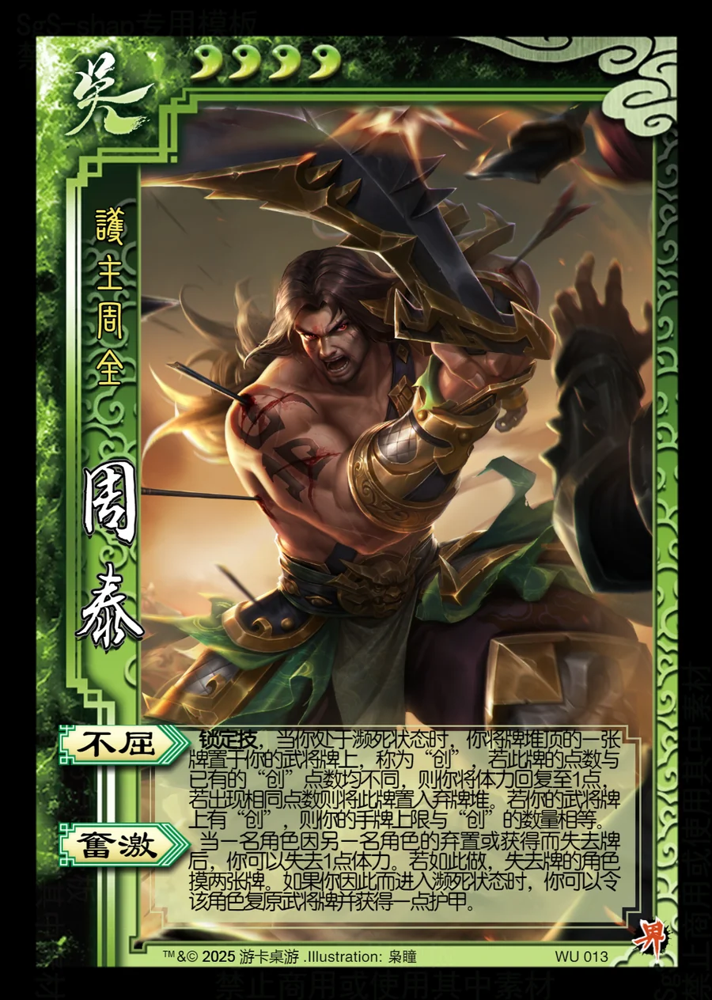

点击卡面查看大图
吴
界周泰
♥4护主周全
不屈锁定技
锁定技，当你处于濒死状态时，你将牌堆顶的一张牌置于你的武将牌上，称为“创”，若此牌的点数与已有的“创”点数均不同，则你将体力回复至1点，若出现相同点数则将此牌置入弃牌堆。若你的武将牌上有“创”，则你的手牌上限与“创”的数量相等。
奋激
当一名角色因另一名角色的弃置或获得而失去牌后，你可以失去1点体力。若如此做，失去牌的角色摸两张牌。如果你因此而进入濒死状态时，你可以令该角色复原武将牌并获得一点护甲。